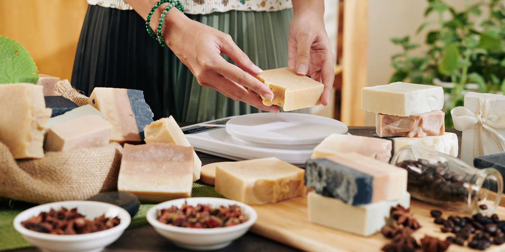

Nuestros jabones artesanales son sanos, ecológicos y están realizados a mano con ingredientes 100% naturales, sin derivados del petróleo en su formulación van sin plástico en su embalaje. Por eso, nuestros jabones artesanales cuidan de tu salud y del planeta. Estos jabones tienen como base los aceites y mantecas que con el proceso de saponificación en frío cogen sus propiedades. Además, respetando el tiempo de curación, conservan toda la glicerina natural. Por ello, hidratan la piel sin taponar los poros.
La receta de nuestros jabones artesanales se completa con plantas en polvo y desecadas. ¡También hay especias que dan color!. Por último, los aceites esenciales no solo dan aroma. A su vez, relajan o activan estados de ánimo gracias a la aromaterapia. Nuestras recetas son específicas para el cuidado de diferentes tipos de piel. Encontrarás jabón artesanal para piel sensible, piel seca con necesidad extra de hidratación o para piel grasa con tendencia al acné. Todo gracias a la naturaleza, ya que no se añade ninguna sustancia para modificar las propiedades organolépticas de los jabones. Puedes incluir todos estos beneficios al utilizar jabones artesanales en tu cuidado y aseo diario. De hecho, puede ser el primer paso para mejorar tu salud y la belleza de tu piel. No solo porque la limpian sino que respetan su equilibrio natural a la vez que aportan nutrientes para mantenerla sana.
¿Qué hacemos?
Estamos muy interesados en llevar una vida más natural a través de la alimentación. A su vez, queríamos evitar la exposición a una cantidad innecesaria de compuestos químicos sintéticos. Por estas dos razones acabamos creando nuestro propio jabón en pastilla. Nos gustó tanto y a los demás también, que lanzamos este blog sobre jabón artesanal y cosmética natural.

PROCESO DE ELABORACIÓN Y COMPOSICIÓN DE LOS JABONES ARTESANALES
La elaboración de nuestros jabones artesanales requiere cuidado y mimo. Se realizan a través del método tradicional de la saponificación en frío. ¡Un proceso lento con un periodo de curación de al menos 30 días.
Así, el jabón conserva toda la glicerina natural, extremadamente beneficiosa para hidratar la piel.
Todos nuestros ingredientes son de origen natural y muchos con certificación bio y ecológica. Verás que contienen aceite de oliva virgen extra bio, aceite virgen de coco o de almendras dulces que aportan un extra de hidratación y nutrición a la piel.
Por eso, lo mejor de usar jabones artesanales es que limpian la piel y la dejan transpirar de forma natural.
COSMÉTICA NATURAL QUE CUIDA DE TI Y DEL MEDIOAMBIENTE
Tanto los jabones artesanales como los champús sólidos, el acondicionador o la pasta de dientes sólida están realizados con ingredientes de origen vegetal.
En ninguno de nuestros productos de cosmética natural se añaden productos químicos sintéticos como derivados del petróleo. De esta manera, evitamos elementos tóxicos que puedan ser absorbidos por nuestro organismo a través de la piel.
Y es que nuestras combinaciones son totalmente naturales y específicas para el cuidado de tu salud y el planeta. De hecho, nuestros productos son más ecológicos que otros porque van sin plástico. ¡Siempre embalados en papel!.
Así, eliminamos envases de plástico innecesarios que son nocivos para el medioambiente
JABONES ARTESANALES CON PROPIEDADES TERAPÉUTICAS
En nuestros jabones artesanales los aceites y las mantecas vegetales nutren y cuidan la piel. ¡Incluso tienen múltiples propiedades cosméticas!. Por ejemplo, aceites como el de rosa mosqueta están repletos de vitaminas que luchan contra los radicales libres y retrasan el envejecimiento prematuro de la dermis. Hay sustancias como las arcillas que regulan el sebo, algunas son bactericidas y otras cicatrizantes.
Por su parte, los aceites esenciales no solo proporcionan aroma a los jabones y demás productos. ¡También nos relajan o activan gracias a la aromaterapia!.
Como lees, puedes incluir todas estas propiedades al utilizar productos naturales en tu cuidado y aseo diario. Usar cosmética natural puede ser el primer paso para mejorar tu salud y tu belleza. No solo porque limpian, si no porque respetan el equilibrio natural de nuestro cuerpo y nos mantienen sanos.
Nuestra filosofía es la honestidad, la sencillez y la calidad
Porque en Sapone di Valeria ofrecemos calidad, elaboramos nuestros productos en laboratorio según las exigencias de la Agencia Española del Medicamento y a través del reglamento N.º 1223/2009 del Parlamento Europeo y del Consejo Sobre Productos Cosméticos.
¡Por eso, tanto el proceso de creación como la procedencia de nuestros ingredientes son seguros y cumplen con todas las garantías de higiene y seguridad!
Con gran esfuerzo y mayor ilusión te garantizamos los mejores productos de cosmética natural. Porque artesanal no debería ser sinónimo de ilegal. Procuramos que nuestros clientes estén informados para compartir con ellos la responsabilidad de consumir productos buenos para la salud, para el planeta y la economía local que reviertan en la sociedad